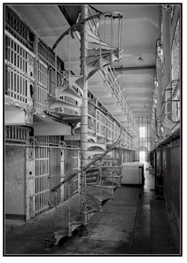
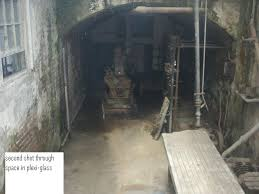

Alcatraz is a deserted prison located 1.25 miles offshore from San Francisco. The small island consists of facilities for lighthouses, a military fortification, and a military prison.
Theories about the haunting of Alcatraz were based mostly on death in the prison. Eight people were murdered by inmates, five men committed suicide, and fifteen died from natural illnesses.
In June 1962 Frank Lee Moris and 4 other inmates escaped from Alcatraz. They tried to swim across the bay to shore but were unsuccessful and were presumed dead. It is said that their spirits haunt Alcatraz in an attempt to repay for their misfortune.
 Alcatraz is an attraction that gives you frightful feelings and fun. Many people have loved their trip to Alcatraz and they have even recommended it for others to enjoy. There are numerous exhibits and attractions that you can attend and perform at your own pace. If you are looking for a less fright filled adventure you can attend our daily ferry ride which includes a live narration about some of Alcatraz's history.
Mark E. S. said "A wonderful place that showcases a very cool part of american history! Thrilled to meet everyone there and looking forward to collaborating with them at The Box SF around the corner!
Susanne A. said " LOVE, lllooovveee, l o v e ! ! ! I knew I would like it, but I fell in love with it. The staff is so wonderful and the tour is worth every penny. It was unforgettable. SO special."
Reasons why you should visit:If you need to reach me my cell number is 555-905-1982!